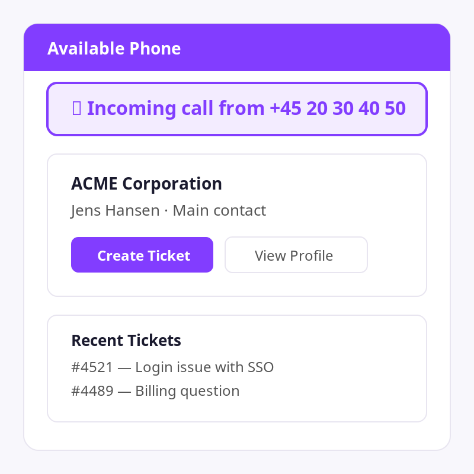
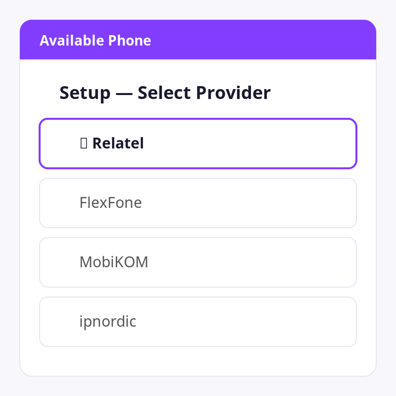
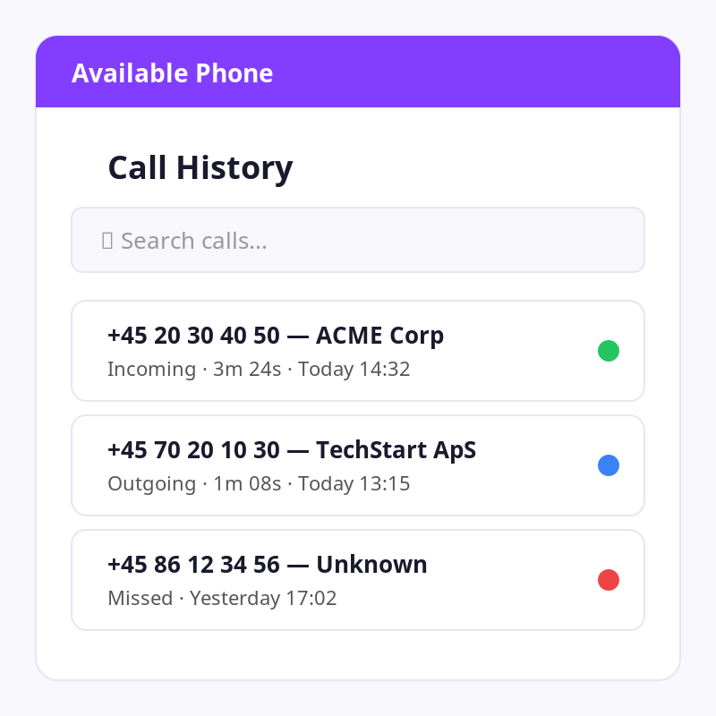
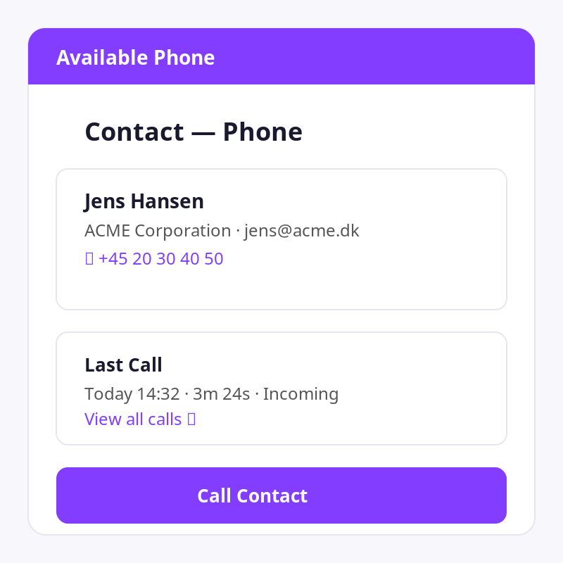

Unified telephony for Zendesk — Relatel, FlexFone, MobiKOM & ipnordic in one app.
When a call comes in, Available Phone pops up the caller's details instantly — name, company, and recent tickets. Agents have full context before they even pick up.

One app for all major Danish telephony providers. Select your provider during setup and you're ready to go — no need for separate apps per system.

Every call is logged automatically. Search and filter past calls, see duration and direction, and jump to related tickets — all from the top bar.

When viewing a ticket, the sidebar shows the contact's phone details and call history. Click to call directly from the ticket — no switching between apps.

Each Zendesk instance gets its own isolated configuration. Perfect for consultancies managing multiple clients.
Call notifications appear instantly via WebSocket or webhook — no polling, no delays.
Select your telephony provider, enter your credentials, and you're live in minutes.
Automatically create Zendesk tickets from incoming calls with caller details pre-filled.
Map each telephony extension to a Zendesk agent. Calls route to the right person automatically.
Track call volume, duration, and missed calls per agent or organization over time.
Install Available Phone from the Zendesk Marketplace. The app appears in the top bar and ticket sidebar.
Open the app and choose your telephony provider — Relatel, FlexFone, MobiKOM, or ipnordic.
Point your provider's webhook URL to Available Phone. We provide the exact URL during setup.
That's it — incoming calls now show caller info, and agents can create tickets with one click.
Available Phone works with Denmark's leading telephony providers. One app, one setup — regardless of which system you use.